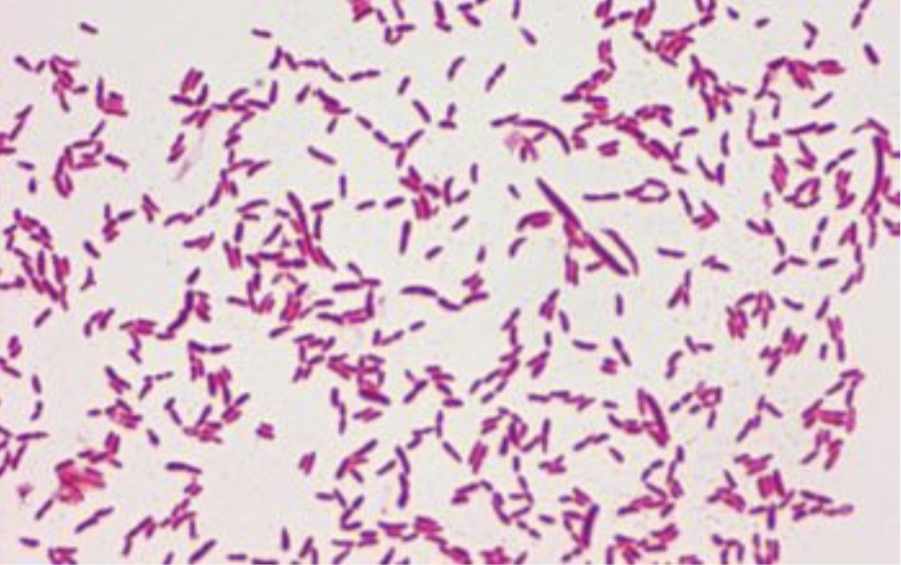

Culture
- Visible growth within 24–48 hours can be observed, and the LB broth will appear turbid or cloudy, indicating successful replication.
- On LB agar plates, P. putida F1 will appear as distinct, circular, smooth, off-white coloured colonies.
Confirmatory Tests
On performing gram staining, Pseudomonas putida will appear Gram-negative (pink/red) and rod-shaped

Gram Stain
Pseudomonas putida typically yields a negative result in the standard indole test
(no red colour), as this test detects the ability to break down tryptophan, which
P. putida generally lacks.
P. putida will give a methyl red negative and Voges–Proskauer positive result,
as it primarily uses the 2,3-butanediol pathway for glucose fermentation, producing
acetoin rather than mixed acids, making the MRVP test key for its identification
and study.
Knockout
- Agarose gel electrophoresis of extracted DNA from transformed E. coli DH5α should yield two bands: one corresponding to genomic DNA and one to the cloned plasmid. The plasmid band can be excised and extracted from the gel for transformation into E. coli S17.
- Plating the E. coli S17 and P. putida co-culture on tetracycline and nalidixic acid–containing media should leave only P. putida colonies, which can then be selected.
- After sucrose plating, colony PCR should produce two different band sizes for two different samples. The sample yielding the shorter DNA fragment compared to the wild type indicates a successful gene knockout.
Minimum Inhibitory Concentration
- In a study conducted by Simmonds et al. (1998) on the formation of benzaldehyde through the mandelate pathway in Pseudomonas putida, it was observed that the aldehyde is toxic at concentrations above 0.5 g/L, where it reduces biotransformation activity. At 2.1 g/L, a complete loss of activity occurs.
- The duration of exposure significantly impacts toxicity. While a 10-minute exposure to 10–30 mM benzaldehyde has little effect, a 2-hour exposure to the same concentrations leads to a marked decrease in the biotransformation rate. A 60% difference in activity is observed between cells exposed for 5 minutes versus those exposed for 2 hours to 10 mM benzaldehyde.
- Since cuminaldehyde is analogous to benzaldehyde, differing only by the presence of a non-reactive isopropyl group, similar toxicity values can be expected.
Extraction
- A water-to-oil ratio of 6:4 can improve cell activity multifold compared to a standard biphasic system.
- A higher recovery percentage of cuminaldehyde can be expected.
- Superior cell viability is observed, as the cells are maintained in M9 minimal media with sodium lactate as the energy source and p-cymene as the sole carbon source for metabolism.
- No nonspecific aldehyde dehydrogenase activity or aldehyde toxicity is observed, as the cuminaldehyde formed continuously diffuses into the organic phase and is simultaneously extracted.
High Performance Liquid Chromatography
- Using a C18 column with the specified mobile phase, a sharp and symmetrical peak can be observed, indicating cuminaldehyde production.
- The peak will exhibit a tailing factor close to 1.0.